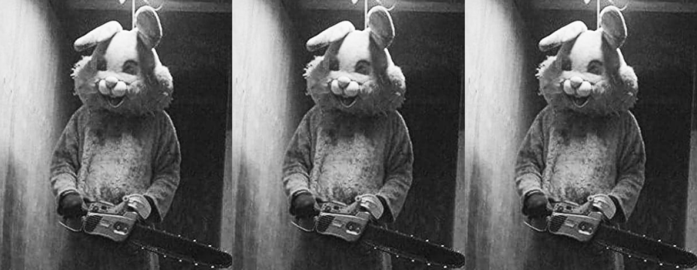
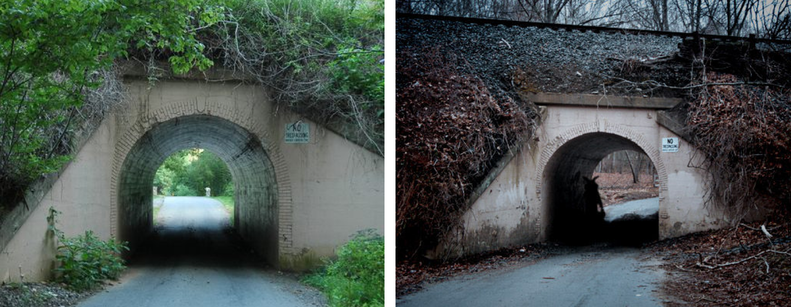
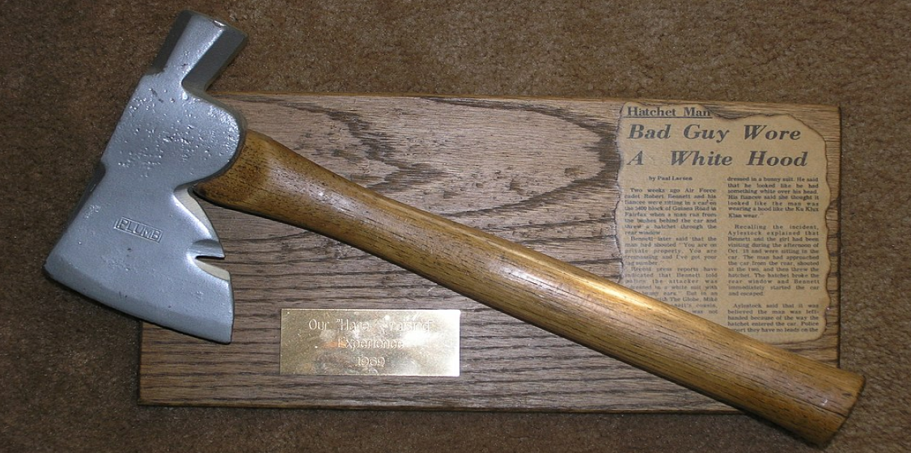

The Bunny Man è una leggenda metropolitana originatasi dopo due incidenti avvenuti nel 1970 nella contea di Fairfax, nello stato della Virginia negli Stati Uniti. La leggenda ha numerose versioni, e molte di queste vedono un misterioso individuo travestito da coniglio attaccare le persone con la sua accetta o con una motosega. La maggior parte delle storie si verificano intorno al Colchester Overpass, un cavalcavia della Southern Railway.
Storia
Le versioni della leggenda variano nel nome, nei motivi, nelle armi, nelle vittime, nella descrizione del costume da coniglio o nella sua mancanza, e talvolta anche nella sua possibile morte. In alcuni resoconti, i corpi delle vittime vengono mutilati e, in alcune varianti, si dice che il fantasma o lo spettro invecchiato dell'uomo coniglio esca dal suo luogo di morte ogni anno ad Halloween per commemorare la sua morte.

Aspetto di The Bunny man nell'immaginario colletivo
Di base, esistono due versioni "ufficiali" della leggenda:
Prima versione
La prima inizia con la chiusura di un manicomio di prigionia nel 1904 a Clifton, in Virginia. Un giorno, durante il trasferimento dei detenuti, l'autobus adibito al trasporto ebbe un incidente e numerosi criminali fuggirono, ma furono tutti recuperati eccetto due. Le ricerche proseguirono nei giorni e settimane seguenti senza trovare traccia dei fuggitivi, ma furono invece trovate diverse carcasse di conigli nei boschi vicini al luogo della sparizione, presumibilmente utilizzate dai due uomini come pasto.
Successivamente, nei pressi del Colchester Overpass, venne trovato il cadavere impiccato di Marcus Wallste, uno dei due detenuti, con una scritta che identificava l'autore del macabro gesto come "Bunny Man". Intanto, la polizia era riuscita a dare un nome all'altro fuggitivo: Douglas J. Grifon.
Da quel giorno egli diventò Bunny Man, mentre il Colchester Overpass, in cui fu ritrovato il cadavere di Wallste, venne rinominato dagli abitanti locali "Bunny Man Bridge".
Seconda versione
L'altra versione, invece, vedrebbe come protagonista un ragazzo adolescente che, un giorno di un periodo imprecisato, indossò un costume da coniglio e massacrò tutta la sua famiglia per poi impiccarsi al Colchester Overpass. Da lì in avanti, gli avvistamenti dell'uomo coniglio aumentarono vertiginosamente, per lo più descritto come un pericoloso individuo armato di ascia o accetta che minaccerebbe le persone e vandalizzerebbe le proprietà, ma il tutto venne bollato come semplice isteria di massa dalle autorità.
Infatti, secondo l'archivista locale Brian A. Conley, la leggenda del Bunny Man non avrebbe alcun fondamento, dato che non è mai esistito alcun manicomio a Clifton né si hanno notizie di un adolescente che abbia sterminato la propria famiglia, e che nessuno si sia mai impiccato al Colchester Overpass. Di conseguenza, secondo Conley, la storia sarebbe inventata e diffusasi per semplice isteria collettiva.
Nonostante questo, però, qualcosa di reale sarebbe effettivamente accaduto.

Bunny Man Bridge, Fairfax Station, Virginia
Primo avvistamento
La sera del 19 ottobre 1970 Robert Bennett e la sua fidanzata avrebbero parcheggiato la loro auto in un campo sulla Guinea Road a Burke. Mentre erano seduti sul sedile anteriore con il motore acceso, notarono qualcosa che si muoveva fuori dall'abitacolo. Qualche istante dopo, il finestrino del passeggero anteriore venne rotto e c'era una figura vestita di bianco in piedi vicino al finestrino infranto.
Bennett, preso dal panico, partì immediatamente a tutta velocità, mentre il misterioso individuo urlava contro di loro dicendo che avevano violato la sua proprietà privata e che possedeva il numero di targa dell'automobile. Durante la fuga, la coppia si accorse che ai loro piedi vi era un'ascia, quasi certamente usata dall'aggressore per rompere il finestrino.
Quando la polizia richiese una descrizione dell'uomo, Bennett insistette sul fatto che l'aggressore indossasse un abito bianco con lunghe orecchie da coniglio. Tuttavia, la fidanzata di Bennett contestò che il loro aggressore non avesse orecchie da coniglio in testa, ma indossava un capirote bianco di qualche tipo. Entrambi ricordavano di aver visto chiaramente il suo viso, ma nell'oscurità non potevano determinarne le fattezze.
La polizia restituì l'ascia a Bennett dopo un esame, e la coppia la conservò come ricordo della terribile esperienza.

L'accetta che il Bunny Man avrebbe scagliato contro la macchina di Robert Bennett nel 1970
Secondo avvistamento
Il secondo avvistamento segnalato avvenne la sera del 29 ottobre 1970, quando la guardia di sicurezza Paul Phillips, mentre stava vigilando un cantiere edile, si avvicinò ad un uomo in piedi sotto il portico della casa in costruzione, a Kings Park West su Guinea Road.
Phillips disse che l'uomo indossava un costume da coniglio grigio, nero e bianco, e aveva circa vent'anni, alto 1.73 m e di 79 kg di peso. Philips provò a rivolgersi al misterioso individuo e questi iniziò a colpire un palo del portico con un'ascia dicendo: "Stai sconfinando. Se non te ne vai, ti taglio la testa".
La polizia della contea di Fairfax ha aperto le indagini su entrambi gli incidenti, ma alla fine furono chiusi per mancanza di prove. Nelle settimane successive agli incidenti, più di cinquanta persone hanno contattato la polizia affermando di aver visto il Bunny Man.